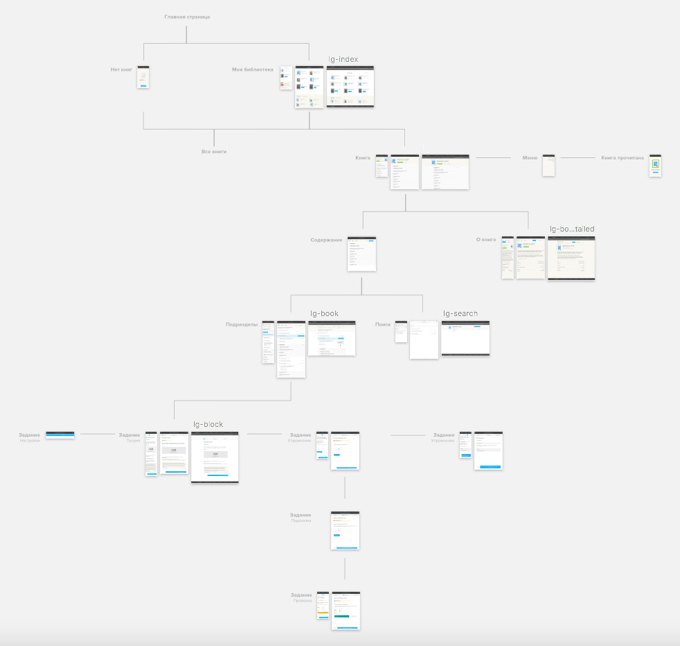

Платформа для публикации учебников
Это большой проект целью которого является разработка онлайн-платформы для создания, дистрибьюции и потребления школьных электронных учебников.
Предполагает представление теоретического материала в разных форматах (текст, аудио, видео, презентации), создание интерактивных заданий (ответы с множественным выбором, drag-n-drop, построение графиков и диаграм, матрицы и т.д.), связь ученик-преподаватель, родитель-преподаватель и другие функции. 
В основном мои задачи были связаны с дизайном и отрисовкой элементов интерфейса по уже заданным принципам и определенным ограничениям. Я дорисовывала адаптивные версии экранов, заканчивала начатые экраны, отрисовывала разные состояния элементов, делала презентационные материалы, проектировала новые типы заданий, медиаматериалов или элементов.
Работа с документацией
Большая часть моих заданий связанных с этим проектом приходилась на работу с документацией. Мне нужно было показать все экраны, состояния компонентов системы (и дорисовать их, если чего-то не хватало).

А первой моей задачей в проекте был сбор ui-кита.